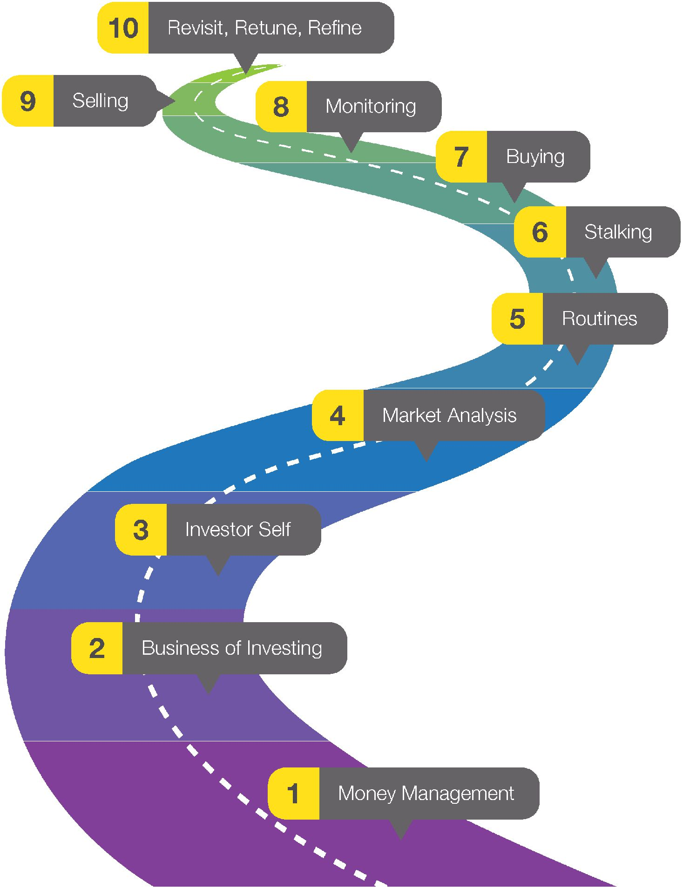
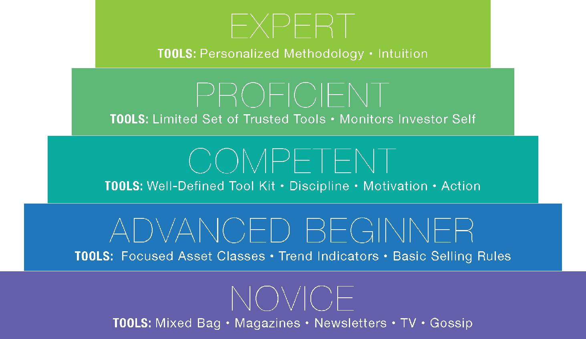
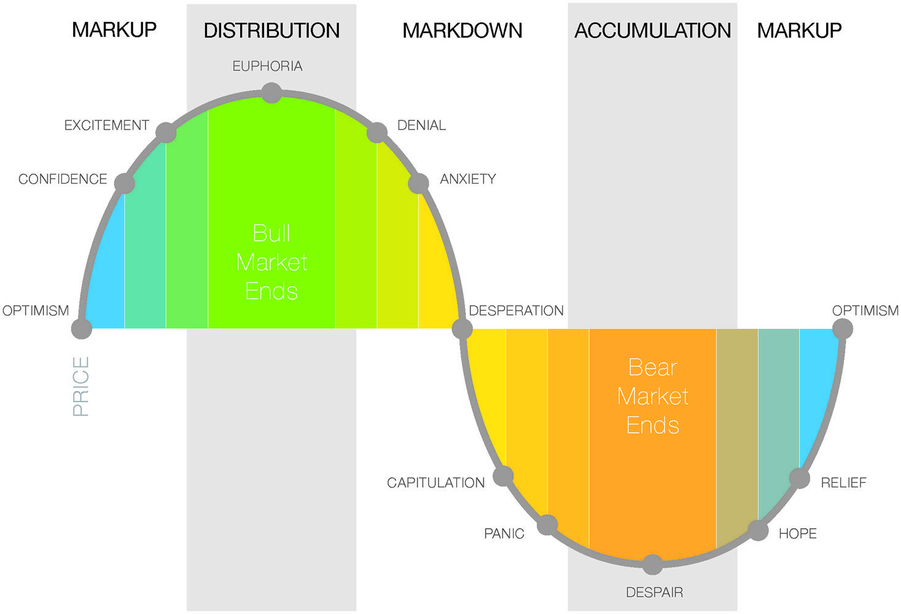

《股票交易精鍊手冊》：掌握股票市場的十個階段
《股票交易精鍊手冊》介紹的是張力交易法 (Tensile Trading)，作者 Gatis N. Roze 與 Grayson D. Roze 是一對父子，也是全職的股票投資人。他們以自身的投資經驗描繪出十個階段的路線圖，提供投資人建構屬於自己的投資系統。

張力交易法
張力交易法 (Tensile Trading) 是作者針對個人投資者設計的一套投資法則，以十個階段組成，其中涵蓋前期準備、市場分析、選股、風險管理、資金保護等面向，組成一幅完整的路線圖，作為讀者踏入金融市場的引導手冊。

第 1 階段：資金管理
資金管理是一個持續的過程，是一套為自己量身定制，而且紀錄完整的財務架構，描繪出最契合個人目標與優先順序的投資與策略類型。建構周詳的資產管理計畫，包含：
- 知道自己擁有什麼資產
- 知道如何保障自己所擁有的資產
- 知道如何讓資產成長
- 據此擬定個人化的投資計畫
在金融市場實際進行投資之前，必須先清楚界定自己的短期與長期目標，以及釐清自己在市場裡的預期。資產配置是在「張力交易法」的資金管理階段中，很重要的一環。書中對於資產配置的定義為：
對於個人投資者來說，資產配置可以被定義為多樣金融資產的策略型選擇與組合；其中資產之間的相關性與百分率權數，將適當反映投資人的風險容忍偏好，並且與投資人的期望獲利、投資期間，以及期望中的特定財務目標達成平衡。
資產配置的關鍵就是分散投資。在「張力交易法」中，將投資組合分成 核心 與 探索 兩個類別。
核心部位主要是由低成本指數型基金、ETF、共同基金等所組成，彼此高度分散、相關性適中的股、債配置。對於一個投資初學者來說，整個投資組合應該百分之百持有核心部位。而隨著知識與經驗的成長，或投資目標的改變，可以慢慢將投資組合的一小部分轉移到積極探索的部位。這種做法允許投資人在追求個人資本成長的同時，還能確保大部分核心投資組合的安全。
第 2 階段：投資事業
這個階段的重點是把 投資當成事業來經營。無論是初學者，或者經驗老到的投資人。以下這十堂課，是投資人追求成功的必經之路。
- 營造你的交易場所
- 不要省略交易工具。
- 組織孕育利潤。
- 好奇心是你的力量。
- 這不是一場單人戰役。你的支持網絡非常重要。
- 隨時留意法規和稅務議題。必要時，不要排斥專業協助。
- 使用可靠的會計與投資軟體。
- 培養企業家的韌性與工作倫理。
- 別忘了遺產計畫。
- 寫下來！
每一個投資人的風格、系統與目標往往各自不同，但成功的投資人都有一項共同的特質，那就是，他們以專業的態度從事交易。
第 3 階段：投資人自我
一旦踏入股票市場、展開投資旅程，一個成功的投資人，必然歷經投資人成長的五個等級：
- 新手：大雜燴，報章雜誌、通訊、電視、小道消息
- 進階新手：針對性的資產類別、趨勢指標、基本賣出原則
- 勝任者：明確的工具組、紀律、動機、行動
- 精鍊者：精簡可靠的工具組、投資人自我的監控
- 專家：個人化方法、直覺

股票市場的成功秘訣，就在於暸解投資人自我所處的心理狀態，以及學會控制自己在市場上交易時常見的情緒缺失。在投資人成長的路上逐步提升等級，從新手、進階新手、勝任者、精鍊者到專家等級，投資人在這個過程中務必坦誠地面對自己，暸解自己的長處與短處所在。
無論在哪一個等級，交易者都會面對四個類別的問題：計畫障礙、知識與教育的缺失、個人心理包袱與信念，以及執行障礙。這四類缺失對應著成功投資的每一項關鍵元素。
最重要的是，在交易日誌裡記下自己的交易經驗。這種做法可以協助發現自己的行為模式，避免重複犯錯，讓自己在投資工作中維持平衡。如果能夠坦誠面對自己的投資，則交易日誌將成為強大的成功指南。
第 4 階段：市場分析
投資人應該挑選自己真正有興趣的市場，然後根據這些市場的狀況，建構自己的交易程序。張力交易法第四階段的重點在於市場分析，這裡介紹的方法，依據的是作者個人的交易風格與風險容忍程度所組成。儘管如此，這些概念可以被視為一個實用的模型，按照每個人的投資特質進行必要的調整。投資人必須設計一套適合自己的投資方法，然後嚴格遵循。作者建議投資人可以專注於以下三個要點：
- **買進許可 (Permission to Buy)**：運用以圖形分析為基礎的模組，確認在目前市況條件下最適合採取的立場（例如成為買家、賣家，或抱牢原有的部位）。
- **從望遠鏡到顯微鏡的取徑 (Telescope-to-Microscope Approach)**：想要提高投資的成功勝算，首先採用望遠鏡（運用月份資料），然後逐步調整而聚焦至週線、日線等等時間架構，最後採用顯微鏡（運用每分鐘更新的資料）。
- **圖形指標 (Charting Indicators)**：投資人應該挑選一組核心的技術指標，然後盡可能深入暸解其意涵與運用方法。作者建議將技術指標的數量限縮在十種，並且都是投資人自身所暸解並且信任的指標。利用這些核心指標，趁著強勢－而非弱勢－買進，尋找表現相對強勁的產業、ETF、共同基金，以及個股。
運用理查・懷可夫 (Richard Wyckoff) 的市場階段概念。透過成交量與資金流量分析，深入暸解控制市場的大型投資機構正在進行的買、賣活動。

適當地混合技術分析與基本分析，構成一套分析策略。結合了兩種分析路徑，再加上理性分析所需的紀律，有助於提升市場投資勝算。
第 5 階段：例行程序
妥善安排每天、每週、每月，乃至於每年的例行程序，可以盡可能降低情緒包袱與衝動性交易，協助強化極端重要的交易直覺。例行程序的核心，就是投資人的 交易日誌 (trading journal)。如果誠實書寫，投資人可以確實地從交易日誌裡汲取各種與自己投資習慣相關的珍貴洞見和啟示。
每天的例行程序應該包含針對大盤趨勢、成交量與動能的分析評估。嚴格監控自己的未平倉部位、追蹤新交易、檢視每天的警訊、訊號與停損、更新交易日誌。
每星期的例行程序，應該包含資產配置的評估，較深入的類股與產業分析、市場寬度與人氣分析，以及跨市分析。
結構性程序可以確保投資人不會疏忽任何重要事項，避免在每天、每週、每個月即將結束時，被迫草率處理一些迫切的事務。每位成功投資人的待辦事項與工作時間表都有所不同，所以每個人應該建立某種最符合自身條件的工作程序，以最有效率的方式完成所有事務。
第 6 階段：追蹤交易
投資人必須知道到哪裡尋找，知道尋找什麼，而且知道如何評估最具潛力、勝算最高的機會。在這個過程裡，投資人必須限縮交易點子的來源，以適當的方法，在幾近於無限的候選對象中篩選初少數具有潛能的對象。
追蹤基本上就是從大量的數據、資訊與潛在投資對象之中，過濾出最具潛力的機會。所以，追蹤程序應該包含某種訊息過濾系統，協助篩選有用的東西，剔除無用的資訊。投資人應該關注的濾網類型包括：
- 成本：投資的目的是取得最大利潤，所以應該盡可能降低可能減少報酬的因素。例如比較券商的執行成本與費用，考慮 ETF 與共同基金之間的重大成本差異。
- 報價時差：證券的買賣報價價差，大體上反映該證券造市者的信心。買進大成交量、價差小的證券，相較於波動劇烈而小成交量、價差大的證券，投資會更穩定、更安全。
- 時效：對於共同基金與 ETF，任何買進都絕對必須先暸解各種分派日期。如果剛好在分派日之前買進基金，將立即產生需要課稅的資本報酬。
一套有效的追蹤策略，需要採用一系列依重要性排序的觀察清單，而透過清單持續進行監控。在這個階段，交易日誌再次成為重要的資源，讓投資人根據自己的經驗，評估哪些東西有用，哪些東西無用。
第 7 階段：買進
作者提出的 BATTLE V 方法可運用於所有的投資機會，有助於交易者找到能夠穩定獲利的交易對象：
- Breakout，價格突破：價格是否突破而創新高？
- Accumlation，承接：股票走勢是否呈現顯著的買盤承接？
- Technicals，技術指標：技術指標是否確認買進行為？
- Trend，趨勢：大盤市場、類股與產業是否呈現正面趨勢？
- Leadership，領導：該股票是否在同業之間呈現相對強勁的價格走勢？是否扮演領導者的角色？
- Earnings per share，每股盈餘：該股票的盈餘表現是否相對優於同業？什麼時候公布新資料？
- Volume，交易量：成交量是否顯示市場需求，是否得到機構法人的支持？
運用金字塔式的買進策略，按照特定百分率分批建立目標部位，而不是透過單筆交易一次建立完整部位。例如，針對想建立的部位，先買進 25%，然後加碼 35%，最後再買進 40%。金字塔式分批交易的最大效益，在於預防性的功能，除非先前建立的部位已經賺錢，否則不能加碼。相較於單純的分批買進或賣出，金字塔式的分批交易法提供更明確的統計優勢，而且可以有效控制風險。這種程序讓投資人在建立部位的過程中得到正面回饋，確認當初的買進決策正確，減少判斷錯誤的可能性。
第 8 階段：監控
身為投資人，必須維護自己的投資組合，這就是監控程序的作用。想要有效監控自己的投資，投資人需要秉持嚴格紀律、明確的程序、可靠的軟體與硬體，以及針對多空發展情節而事先安排的因應計畫。
成功投資人擱置自己的期待、願望與情緒，全神貫注於市場實際發生的一切。可以運用第三階段所發展的「投資人自我」概念，以及監控階段所必須的自我控制。這個程序包括每一筆交易的記錄，比如建立特定部位的原因、投資人在每支股票所辨識的強弱勢跡象、交易的結果，這一切都應該寫在投資人自己的交易日誌裡。
隨時調整部位停損，根據市況發展更新警訊設置。最重要的是，隨時保持條理，並且嚴格遵循投資計畫。監控階段絕對不能疏忽市況發展，紀律絕對不得鬆懈。務必保持全神貫注。
第 9 階段：賣出
相對於買進程序，賣出看技術面，不是基本面。作者認為買進策略參酌基本面資料，可以提供顯著效益，但是賣出時，基本面資訊卻緩不濟急：因為價格走勢一旦惡化，意味著某些賣家已經開始察覺負面發展，不需要多久，這些負面的基本面消息就會流傳開來，但是投資部位到這個時候通常已經被嚴重損害了。在賣出階段，投資人應該只參考價格行為，然後決定適當的分批賣出程序。
投資人可以學習、運用無數種類的賣出策略，調整成適合自己的方法，但是，買進之前，就應該備妥明確的賣出系統。建立賣出系統的目的，一方面是為了保障投資人，鎖定獲利、減少損失、或保護資本。
買進階段所採用的金字塔式分批進場策略，也同樣適用於賣出。但下降趨勢的發展速度大約是上升趨勢的三倍，因此出脫速度必須有所調整。分批買進的百分率配置可能是 25% - 30% - 40%，賣出程序則可以採取相反的配置結構，譬如 50% - 35% - 15%。分批出脫的策略有助於提升交易績效的穩定性，讓市場有機會證明投資人的判斷正確。
第 10 階段：檢討、調整、精鍊
張力交易法的最後一個步驟，取決於 4R：
- 改造學習曲線 (Reshaping your learning curve)
- 重整思緒 (Realigning your thinking)
- 改編紀律養成 (Reprogramming your discipline)
- 精鍊交易技巧 (Refining your trading skills)
每進行一筆交易之後，務必重新評估決策與執行程序，檢討交易系統，藉以提升未來的交易勝算。對於虧損的交易，檢討工作特別困難，但這正是投資者成敗的分野所在。反省過程中務必絕對坦誠、謙卑，並盡力改進，將任何錯誤轉化為成長的動力。
投資人自我實際上處於動態，會持續成長、變動。所以應該定期檢討張力交易法每一個階段。張力交易法就跟股票市場一樣，也有循環特質。正向回饋環路，以及檢討、調整、精鍊的程序，是邁向成功的強大工具。
結語
《股票交易精鍊手冊》十分適合作為投資人剛踏入市場的教戰手冊，尤其是主動投資者，可以看看一個專職的投資人是應該怎樣認真地看待交易這件事。張力交易法提出了十個階段組成的投資法則，給出了在投資路上一個清晰的學習與成長路徑。
在第一個資金管理的階段，可能是最為繁瑣、乏味的過程，但我認為也是最重要的一個過程，尤其，資產配置是決定投資組合報酬的最重要因素，更應該認真規劃它。我很認同作者將投資組合分成所謂核心與探索部位的概念。指數化投資是最適合每個人的投資方法，非常適合剛踏入市場的新手。因為它簡單、有效，甚至可以不用花太多時間從事頻繁交易，就可以輕鬆地複製大盤績效。而隨著投資知識與經驗的成長，投資人可以將投資組合的一小部分嘗試自行選股，追求打敗大盤的報酬。假如不幸在市場中的績效不如預期，由於核心部位的配置，也不至於對整體資產有太多的傷害。
在這個探索的過程中，若發掘出自己的選股天份，獲得比大盤更好的報酬績效，則可以逐漸拉高主動選股的部位；如果發現自己沒有主動選股的能力，那麼認清現實回到被動式的指數化投資，對於投資人而言可能會是更好的投資策略。畢竟，選擇比努力更重要。投資人必須清楚了解自己是哪一類型的投資人，如果沒辦法在一分鐘內解釋自己的投資哲學，那代表投資人自身可能缺乏盤算與審思，這個時候如果貿然投入市場，則是很危險的一件事。
除了資產配置外，寫交易日誌是本書傳達的另一個重要概念。這個過程可以幫助投資人事後檢討自己做出的每一筆交易紀錄，汲取過往的成功經驗，並在錯誤中學習，也更謹慎地看待每一次的交易記錄，避免自己做出思慮不周、過於衝動性的交易決定。
投資並不是一件容易的工作，事前的規劃與準備更不可少。無論如何，最重要是找到適合自己的一套投資哲學，擬定目標並維持紀律，在投資的路上不斷地學習向前。